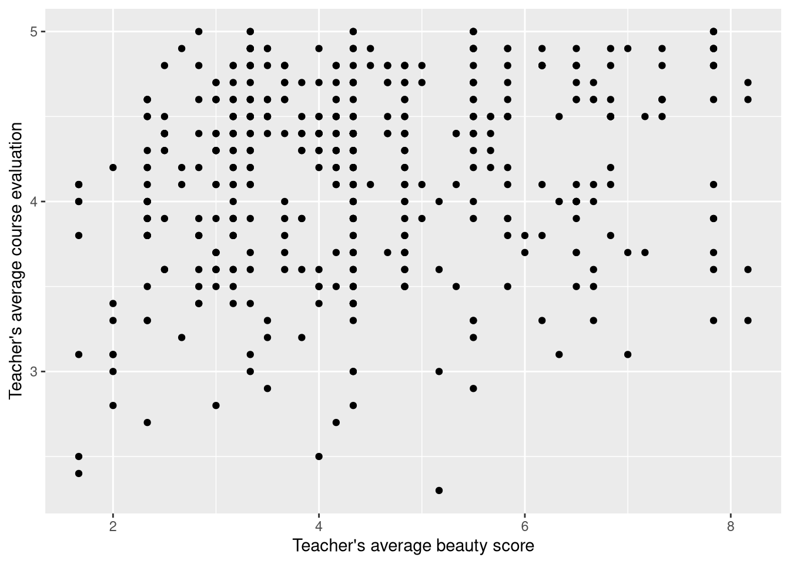
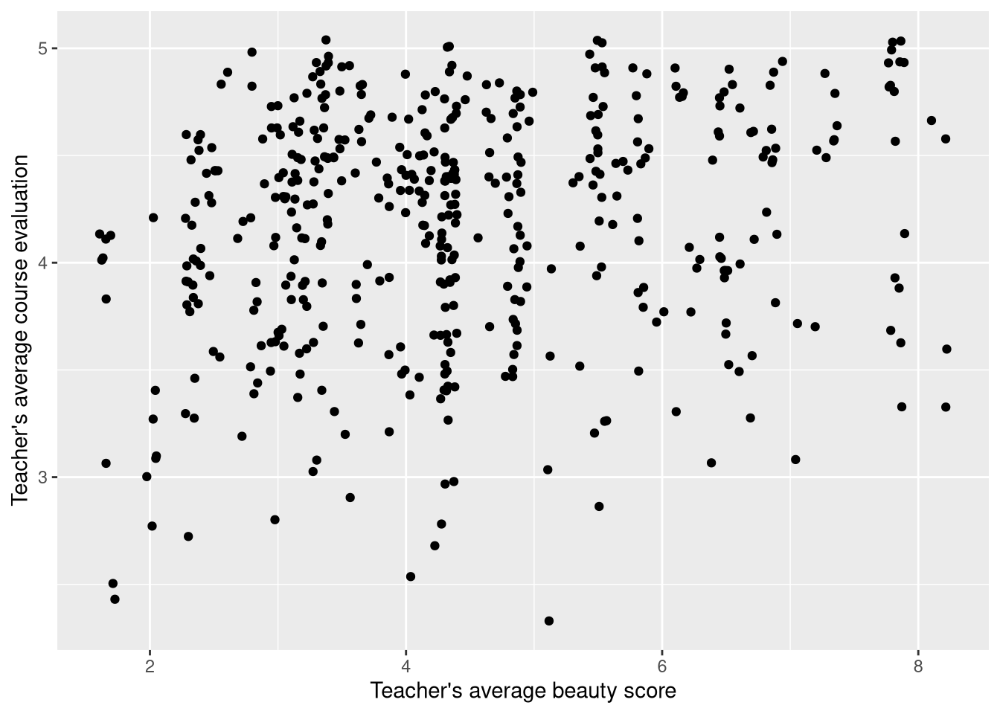
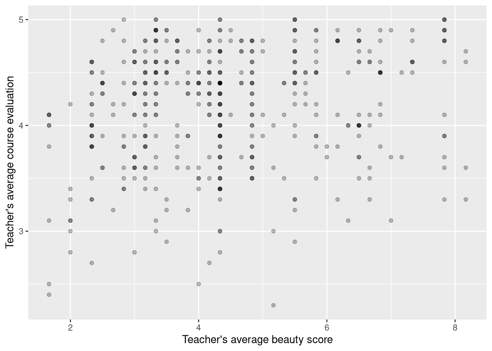
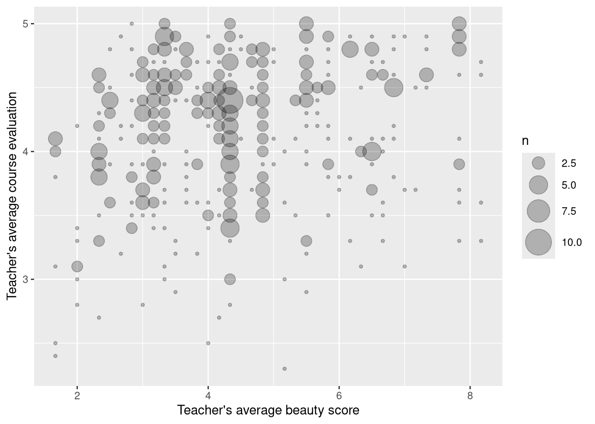
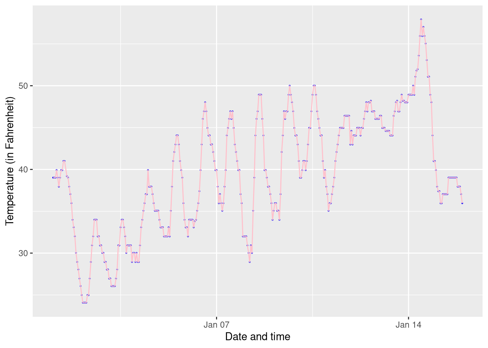
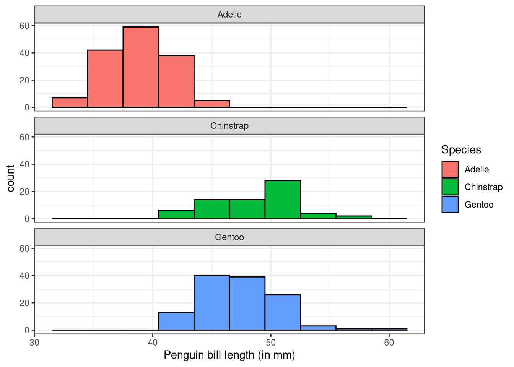

Code
library(tidyverse)
library(moderndive)Consider the data set evals from the moderndive package. First load both tidyverse and moderndive.
library(tidyverse)
library(moderndive)What is evals measuring?
?evalsThe data are gathered from end of semester student evaluations for a sample of 463 courses taught by 94 professors from the University of Texas at Austin. In addition, six students rate the professors’ physical appearance. The result is a data frame where each row contains a different course and each column has information on either the course or the professor.
score versus bty_avgggplot(data = evals, aes(x = bty_avg, y = score)) +
labs(x = "Teacher's average beauty score",
y = "Teacher's average course evaluation") -> p1
p1 +geom_point() 
Let’s look at a few ways to fix some of the over plotting.
geom_jitter).alphageom_count() or stat_sum()p1 + geom_jitter()
p1 + geom_point(alpha = .25)
p1 + geom_count()
p1 + stat_sum()p1 + geom_count(alpha = .25)p1 + geom_count(alpha = 0.25) + scale_size(range = c(1, 10))
p1 + stat_sum(alpha = 0.25, aes(size = after_stat(prop)))p1 +
geom_count(alpha = 0.25, aes(color = gender)) +
scale_size(range = c(1, 10)) +
geom_smooth(aes(color = gender), method = "loess", se = FALSE) +
labs(color = "Sex") +
scale_color_manual(values = c("female" = "pink", "male" = "darkblue")) +
theme_classic()Consider the early_january_weather from the moderndive package.
| origin | year | month | day | hour | temp | dewp | humid | wind_dir | wind_speed | wind_gust | precip | pressure | visib | time_hour |
|---|---|---|---|---|---|---|---|---|---|---|---|---|---|---|
| EWR | 2013 | 1 | 1 | 1 | 39.02 | 26.06 | 59.37 | 270 | 10.35702 | NA | 0 | 1012.0 | 10 | 2013-01-01 01:00:00 |
| EWR | 2013 | 1 | 1 | 2 | 39.02 | 26.96 | 61.63 | 250 | 8.05546 | NA | 0 | 1012.3 | 10 | 2013-01-01 02:00:00 |
| EWR | 2013 | 1 | 1 | 3 | 39.02 | 28.04 | 64.43 | 240 | 11.50780 | NA | 0 | 1012.5 | 10 | 2013-01-01 03:00:00 |
| EWR | 2013 | 1 | 1 | 4 | 39.92 | 28.04 | 62.21 | 250 | 12.65858 | NA | 0 | 1012.2 | 10 | 2013-01-01 04:00:00 |
| EWR | 2013 | 1 | 1 | 5 | 39.02 | 28.04 | 64.43 | 260 | 12.65858 | NA | 0 | 1011.9 | 10 | 2013-01-01 05:00:00 |
| EWR | 2013 | 1 | 1 | 6 | 37.94 | 28.04 | 67.21 | 240 | 11.50780 | NA | 0 | 1012.4 | 10 | 2013-01-01 06:00:00 |
geom_line()ggplot(data = early_january_weather, aes(x = time_hour, y = temp)) +
geom_point(size = 0.2, color = "blue") +
geom_line(color = "pink") +
labs(x = "Date and time",
y = "Temperature (in Fahrenheit)")
geom_histogram()library(palmerpenguins)
penguins |>
ggplot(aes(x = bill_length_mm)) +
geom_histogram() +
labs(x = "Penguin bill length (in mm)")penguins |>
ggplot(aes(x = bill_length_mm)) +
geom_histogram(binwidth = 3, color = "black", fill = "lightblue") +
labs(x = "Penguin bill length (in mm)")penguins |>
ggplot(aes(x = bill_length_mm, fill = species)) +
geom_histogram(binwidth = 3) +
labs(x = "Penguin bill length (in mm)")penguins |>
ggplot(aes(x = bill_length_mm, fill = species)) +
geom_histogram(binwidth = 3, color = "black") +
facet_wrap(vars(species), ncol = 1) +
theme_bw() +
labs(x = "Penguin bill length (in mm)",
fill = "Species")
geom_boxplot()penguins |>
ggplot(aes(x = species, y = bill_length_mm, fill = species)) +
geom_boxplot() +
labs(y = "Penguin bill length (in mm)")# Note that the legend is not needed
penguins |>
ggplot(aes(x = species, y = bill_length_mm, fill = species)) +
geom_boxplot() +
guides(fill = "none") +
labs(y = "Penguin bill length (in mm)",
x = "")
geom_bar()penguins |>
ggplot(aes(x = species)) +
geom_bar() +
labs(x = "")#
penguins |>
ggplot(aes(x = species, fill = species)) +
geom_bar() +
guides(fill = "none") +
labs(x = "")